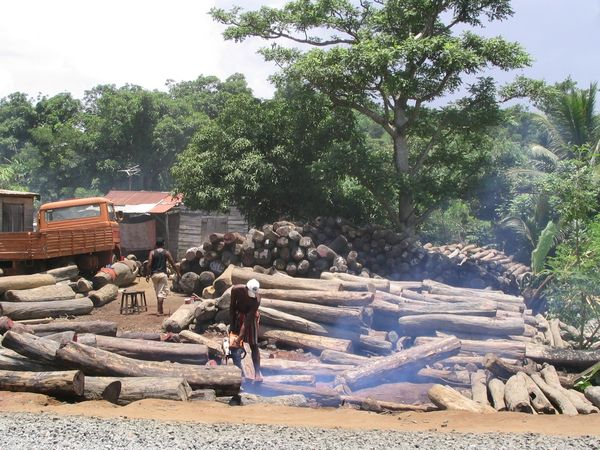
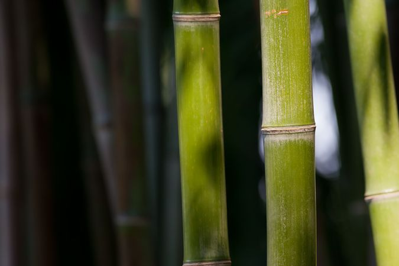
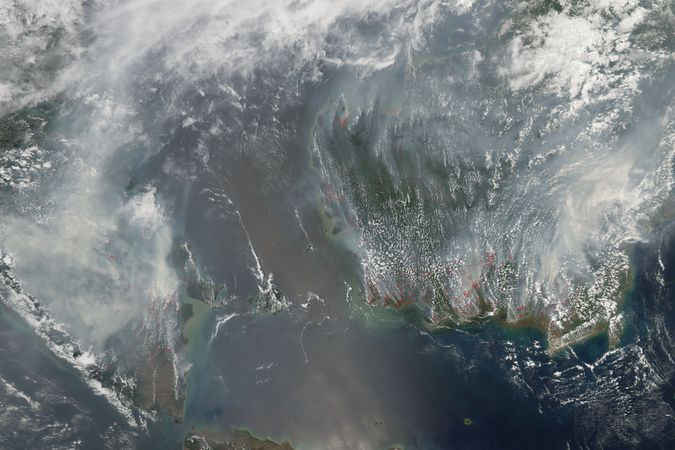
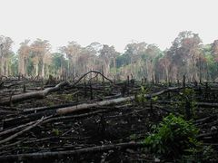
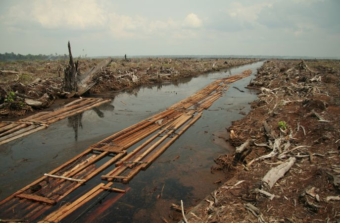
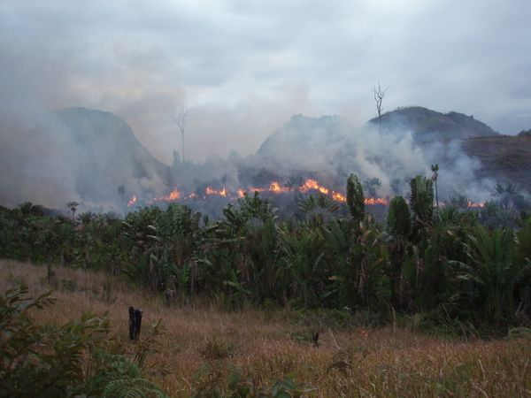
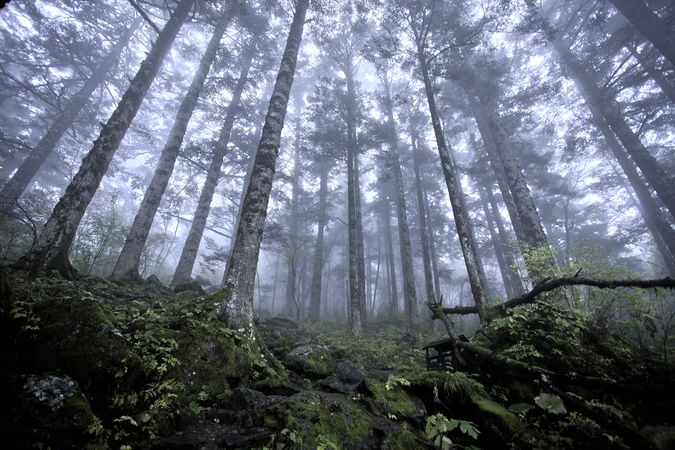

Illegal logging in Madagascar. In 2009, the vast majority of the illegally obtained rosewood was exported to China.

Bamboo is advocated as a more sustainable alternative for cutting down wood for fuel.

Fires on Borneo and Sumatra, 2006. People use slash-and-burn deforestation to clear land for agriculture.

Deforested land in the Amazon.

Satellite photograph of deforestation in progress in eastern Bolivia. Worldwide, 10 percent of wilderness areas were lost between 1990 and 2015.

The last batch of sawnwood from the peat forest in Indragiri Hulu, Sumatra, Indonesia. Deforestation for oil palm plantation.

Illegal slash and burn practice in Madagascar, 2010

Deforestation for the use of clay in the Brazilian city of Rio de Janeiro. The hill depicted is Morro da Covanca, in Jacarepaguá

An array of Neolithic artifacts, including bracelets, axe heads, chisels, and polishing tools.

Transferring land rights to indigenous inhabitants is argued to efficiently conserve forests.

Tree cover loss shown in response to unmonitered deforestation.